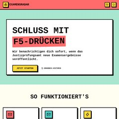
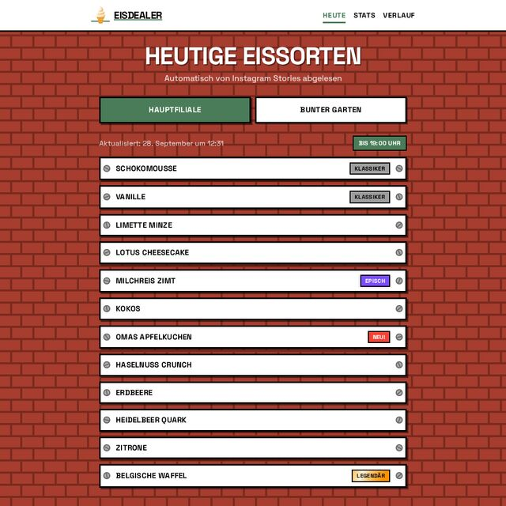
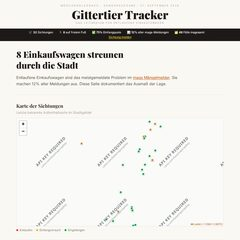
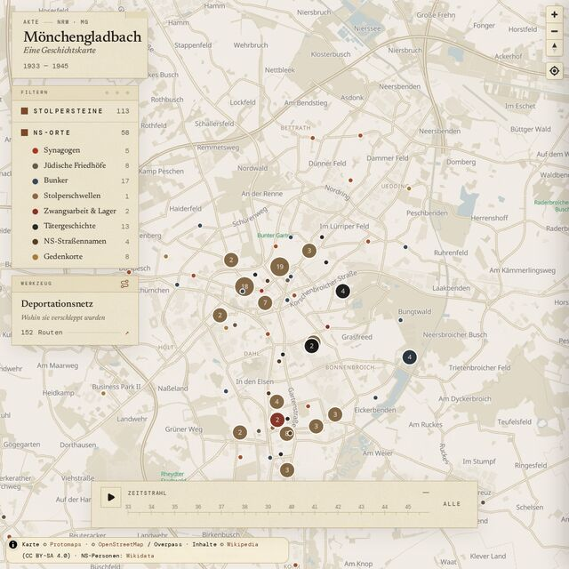

about me
I build scrapers, indexers, and the apps that sit on top. Most of my side projects start with public data that's annoying to read and end as a small app that makes it readable.
stack
- languages: typescript, javascript, sql, rust
- backend & data: bun, node.js, postgresql, clickhouse, sqlite, valkey/redis, mongodb, elysia, trpc, orpc, drizzle, prisma, event sourcing, server-sent events, websockets
- frontend: react, next.js, tanstack start, tailwind css, vite, storybook
- devops & cloud: docker, docker compose, terraform, github actions, ci/cd, coolify, dokploy, hetzner, vercel, unix
- observability: opentelemetry, distributed tracing, axiom, structured & wide-event logging
- ai tooling: claude code, agentic coding, spec-driven development, mcp servers, multi-agent workflows
projects
-

examensradarPush notifications for German law students waiting on their state exam results.
-

eisdealer-trackerToday's ice cream flavors at Die Eisdealer, read from Instagram stories with Gemini vision, plus statistics.
-

gittertiereTracks Mönchengladbach's stray shopping carts, scraped from the city's public issue tracker.
-

moenchengladbach-historyThe history of Mönchengladbach on an interactive map.
-
changebot
Watches pages for changes and pings you on ntfy.sh. Runs on Bun and GitHub Actions.